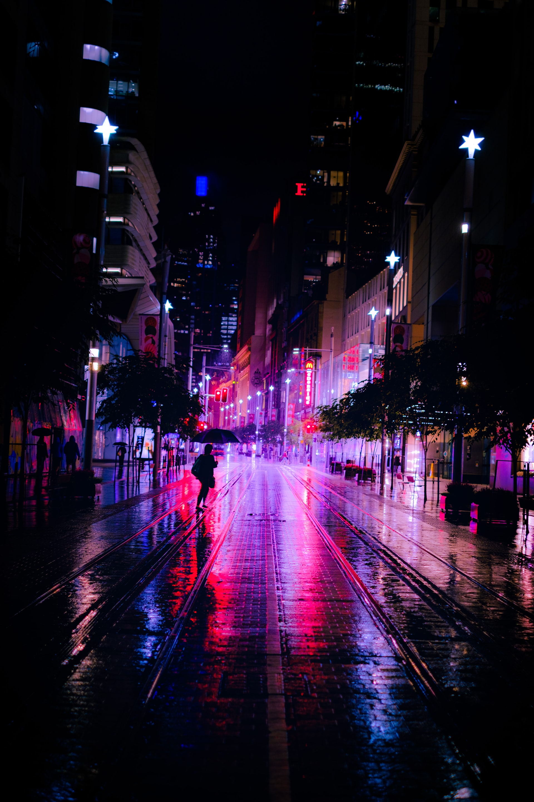
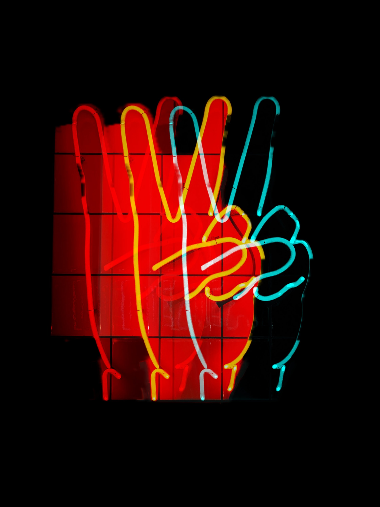
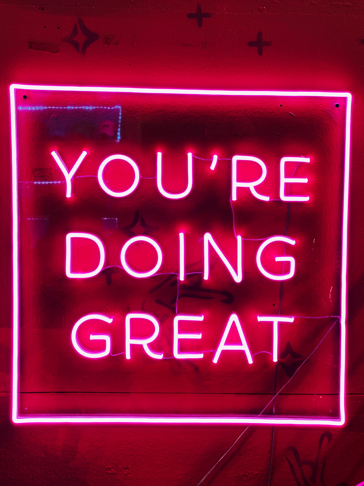

Arcade Dreams
Night City
Peace
You're Doing Great
Here is where I keep everything up to date regarding any ongoing projects. Enjoy!
“So do all who live to see such times. But that is not for them to decide. All we have to decide is what to do with the time that is given us.”
― J.R.R Tolkien, The Fellowship of the Ring
“It's like in the great stories, Mr. Frodo. The ones that really mattered. Full of darkness and danger they were. And sometimes you didn't want to know the end… because how could the end be happy? How could the world go back to the way it was when so much bad had happened? But in the end, it’s only a passing thing… this shadow. Even darkness must pass.”
― J.R.R. Tolkien, The Two Towers
“Well, here at last, dear friends, on the shores of the Sea comes the end of our fellowship in Middle-earth. Go in peace! I will not say: do not weep; for not all tears are an evil.”
― J.R.R. Tolkien, The Return of the King
It's time!
Sign up to get notified about new posts!